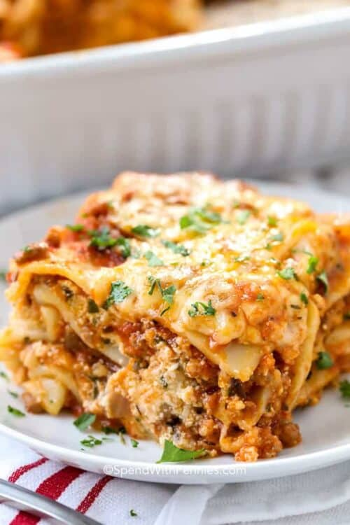

Lasagna
Homemade Lasagna is a family favorite and a great way to feed a crowd.

In this classic lasagna recipe, sheets of pasta are layered with a cheesy filling, a rich meaty tomato sauce, and
more cheese and then baked until bubbly and browned.
While there are a few steps, this lasagna recipe is relatively easy to make and has so much flavor.
This Is Our Go-To Lasagna Recipe Because…
- This recipe has been called the best by many and has thousands of 5 star reviews!
- It uses simple ingredients that you likely have on hand, and it packs big flavor!
- This is an easy lasagna recipe. It requires just one pan, one bowl, and a 9×13 baking dish.
-
It reheats well and can be made ahead of time. You can freeze lasagna either before or after
baking.
Lasagna Ingredients
-
Cheese Filling: For this classic lasagna recipe, the cheese filling has ricotta and parmesan
with seasonings. You can make homemade ricotta cheese or replace it with cottage cheese.
-
Meat: I use both Italian sausage and ground beef for great flavor. If using all beef, add ¼
teaspoon of fennel seeds and some Italian seasoning to the meat mixture for flavor, or make my homemade Italian
sausage.
-
Sauce: To keep this sauce quick, I use pasta sauce or marinara sauce (it’s easy to make from
scratch with crushed tomatoes and canned tomatoes if you’d prefer). If using store-bought sauce, I love Rao’s
for flavor.
Spinach (variation): Spinach is optional but delicious in lasagna. For spinach lasagna, thaw 10oz
of frozen spinach, squeeze out the moisture, and add it along with the cheese layer.
How to Make Lasagna
While homemade lasagna may have a few steps, each step is easy – and I assure you it’s worth the time; the perfect
Italian meal!
-
Boil pasta: In a large pot of salted water boil lasagna noodles
per the recipe below.
-
Prepare meat sauce: Cook sausage and beef with onion and garlic. Drain well, add the pasta
sauce (I love this brand) & simmer it for a few minutes to thicken.
- Combine cheese mixture: Stir the cheese mixture together in a bowl.
-
Layer & bake: Layer the meat sauce and cheese mixture with lasagna noodles and bake until the
top of the lasagna is golden brown.
Important: Let the Lasagna Rest
Once removed from the oven, let the lasagna sit/rest for at least 15 minutes (up to 45 minutes is fine, it will
retain the heat well). This will allow it to thicken up a bit and help it keep its shape when cut. Resting is not
required when reheating.
How to Layer Lasagna
- Spread about a cup of meat sauce into a 9×13 pan. Add a layer of noodles.
-
Top the noodles with some of the ricotta cheese mixture. Repeat the layers, ending with a layer of noodles and
sauce
- Cover with foil and bake. Remove foil, top with mozzarella and parmesan, and bake for another 15 minutes.
Once you have prepared the meat sauce and the cheese mixture, you’re ready to layer. This is the order of layers:
- sauce – noodles – cheese
- sauce – noodles – cheese
- sauce – noodles – cheese
- noodles – sauce (bake) – cheese
Serve with a big slice of homemade Garlic Bread and garnish with fresh basil or a couple of tablespoons of
parsley. Finish the meal with a Caesar salad or Italian salad.
Tips for the Best Lasagna
Here are my tips to ensure this is the best lasagna recipe you’ve ever had!
- Choose a quality pasta sauce.
- Bake this lasagna recipe for one hour.
- Cover it with aluminum foil for most of the cooking time so it doesn’t dry out.
- Add the cheese during the last 15 minutes of cooking so it becomes browned and bubbly.
- Let it rest at least 15 minutes before cutting.
Make Ahead
Lasagna can be prepared ahead of time and refrigerated for up to 2 days before baking. It can also be frozen
before or after baking.
To Freeze Lasagna
Lasagna is one of the best meals to make ahead and freeze. Double or triple the recipe and store it tightly
wrapped in the freezer for up to 3 months.
Thaw in the refrigerator overnight and bake as directed. If the lasagna is cold from the fridge, it may need an
extra 20 minutes or so of cooking time.
How To Reheat Lasagna
If you’ve frozen leftovers, pop them in the oven at 350°F covered until reheated. This should take about 30
minutes! Of course, leftovers are perfectly heated in the microwave too!
Easy Homemade Lasagna
This homemade lasagna recipe is delicious and easy to make. It features layers of pasta, meat sauce, and cheese
with a golden cheesy topping!
- Prep Time: 30 minutes
- Cook Time: 1 hour
- Resting Time: 15 minutes
- Total Time: 1 hour 45 minutes
Ingredients
- 12 lasagna noodles uncooked
- 2 ½ cups shredded mozzarella cheese
- ¼ cup shredded Parmesan cheese
Tomato Sauce
- ½ pound Italian sausage
- 1 yellow onion diced
- 2 cloves garlic minced
- 36 ounces pasta sauce *see note
- 2 tablespoons tomato paste
- 1 teaspoon Italian seasoning
- ½ teaspoon salt more to taste
Cheese mixture
- 2 cups ricotta cheese or cottage cheese
- ¼ cup chopped fresh parsley
- 1 large egg beaten
- 1 ½ cups shredded mozzarella cheese
- ¼ cup shredded Parmesan cheese
- ¼ teaspoon salt
Instructions
-
Preheat the oven to 350°F. Bring a large pot of salted water to a boil. Add the lasagna noodles and cook until
al dente (firm) according to package directions. Drain, rinse under cold water, and set aside.
-
Meanwhile, in a large skillet or Dutch oven, brown the beef, sausage, onion, and garlic over medium-high heat
until no pink remains. Drain any fat.
-
Stir in the pasta sauce, tomato paste, Italian seasoning, ½ teaspoon of salt, and ¼ teaspoon of black pepper.
Simmer uncovered over medium heat for 5 minutes or until slightly thickened. Taste and season with additional
salt if desired.
-
In a separate medium bowl, combine 1 ½ cups mozzarella cheese, ¼ cup parmesan cheese, ricotta, parsley, egg, and
¼ teaspoon salt.
-
Spread 1 cup of the meat sauce in a 9×13 pan or casserole dish. Top it with 3 lasagna noodles. Layer with 1 cup
of the ricotta cheese mixture and 1 cup of meat sauce. Repeat twice more. Finish with 3 noodles topped with
remaining sauce.
- Cover with foil and bake for 45 minutes.
-
Remove the foil and sprinkle the top of the lasagna with 2 ½ cups mozzarella cheese and ¼ cup Parmesan cheese .
Bake uncovered for an additional 15 minutes or until browned and bubbly. Broil for 2-3 minutes if desired.
- Rest for at least 15 minutes before cutting.
Notes
*Note on the sauce: In this recipe, each layer has about 1 cup of meat sauce. If you prefer more
sauce in your lasagna, increase the pasta sauce to 48 oz. Salt needed may vary based on the brand of pasta sauce
used. Taste and season after simmering.
Cheese Layer: The cheese layers are thin; if you’d prefer a thicker layers cheese, divide the
cheese in half and put on the first two layers, and add just meat sauce to the third layer. We tested this with
extra ricotta cheese and found it overpowered the lasagna.
Time-Saving Tip: Use fresh lasagna sheets found in the deli area and skip the boiling step! Fresh
lasagna doesn’t need to be boiled first.
Let the lasagna sit/rest for at least 15 minutes once removed from the oven (even 30-45 minutes
is fine). This will keep it from becoming runny and help it to keep its shape when cut. Resting is not required
when reheating.
Substitutions:
- Ricotta cheese can be replaced with cottage cheese.
-
Use all beef (or even ground turkey) in place of sausage if needed. If using all beef, add ½ teaspoon Italian
seasoning to the meat (and ¼ teaspoon fennel seeds if desired).